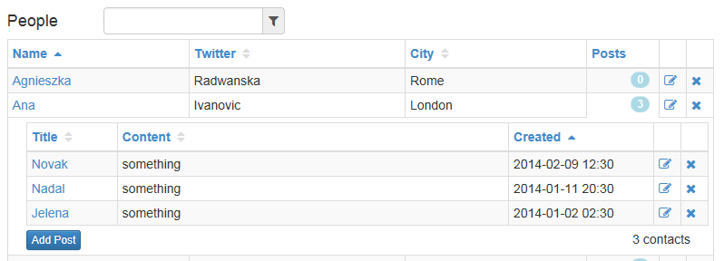
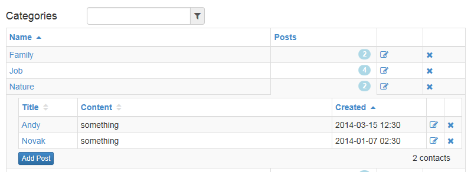

Features
Knockout CRUD with Bootstrap forms
Label
Something elseLabel
Something elseLabel
Something elseLabel
Something elseHere is the sample of usage for Admin Module of Web Site
- Provide Database Definition Sample Database definition
- Generate of JavaScript classes, HTML templates, Knockout widgets ...
- Admin module after generation.
Generator reads definitions of Tables and Fields, and generates javascript classes (js files).
It uses relation established between tables, and generates appropriate JavaScript code:
- js classes
- HTML templates
- Knockout widgets: dropdowns, typeaheads, date pickers ...
- Expanding panels for 1:N relations beetween entities (tables)
Each cell of SLGrid can host Knockout widget like dropdown, typeahead, date picker ...
It easily to create Knockout widget and itegrate it with SLGrid.
Generated JavaScript code can be easily extended with additional functionality and business logic. Business logic can be complex, and users prefer custom events where they can write their custom code. That way whole js code is in appropriate classes, and there is no JavaScript code at page (global) level. Generator will keep user changes upon modification of Database Definition and regeneration of classes. The core component is Knockout SLGrid which can host Knockout Widget in each cell column. See feature: "Widgets". That way each table field can have its own presentation.
Steps
-
Generator will generate YourEntity JavaScript classes based on template classes:
Person.js => YourEntity.js
PersonList.js => YourEntityList.js
PersonDB.js => YourEntityDB.js
-
Add ViewModel to globalViewModel
var globalViewModel = { ... yourEntityList: YourEntityList.viewModel }
-
Optionally define YouEntityList template. Otherwise default "EntityListTemplate" will be used.
-
Bind YourEntityTemplate to YourEntityList.viewModel
<div class="entity-list your-entity-list" style="width:80%" data-bind="template: { name: 'EntityListTemplate', data : yourEntityList, afterRender: yourEntityList.afterRender }" > </div>
var Person = function () {
this.PersonId = ko.observable(data.PersonId || 0)
this.Name = ko.observable(data.Name || "")
this.TwitterName =
ko.observable(data.TwitterName || "")
...
}
Person.prototype.PersonId = ko.observable(0)
.extend({
primaryKey: true,
headerText: "Id",
formLabel: "Id",
width: "100px",
defaultValue: function () {
return this.getNextId()
}
});
...
Person.prototype.chosenCity = ko.observable()
.extend({
headerText: "City",
formLabel: "City",
width: "200px",
//presentation: "bsDropDownCity"
presentation: "bsTypeaheadCity"
});
...
Hosts ViewModel for Person list.
Uses module pattern to overcome the limitations of the object literal,
offering privacy for variables and functions while exposing a public API.
Uses module pattern to overcome the limitations of the object literal,
offering privacy for variables and functions while exposing a public API.
var PersonList = (function (DB) {
var db = DB;
var StorePerson = function (data) {
db.StorePerson(data)
}
var UpdatePerson = function (data) {
db.UpdatePerson(data)
}
var DeletePerson = function (personId) {
db.DeletePerson(personId)
}
function GridViewModel() {
...
this.canAdd = ko.computed(function () {
return this.itemsAtPage().length < PageSize + 1;
}, this)
this.add = function () {
}
...
}
GridViewModel.prototype = new SLGridViewModel();
var gridViewModel = new GridViewModel();
return {
viewModel: gridViewModel
}
})(new PersonDB());
Work with Database (storage)
Adapter can be:
Adapter can be:
- in-memory
- ajax based
- LightStreamer pusher
- any custom adapter for specific DB
function PersonDB() {
this.UpdatePerson = function (data) {
...
}
this.StorePerson = function (data) {
...
}
this.DeletePerson = function (id) {
...
}
}
PersonDB.prototype = new DBEntity();
ViewModels of all the entities are being used in global ViewModel like this:
var globalViewModel = {
personList: PersonList.viewModel,
cityList: CityList.viewModel,
categoryList: CategoryList.viewModel
}
$(document).ready(function () {
ko.applyBindings(globalViewModel);
});
Here is the example of PersonList template.
As in all other cases, if you provide custom template it will be used.
Otherwise default EntityListTemplate will be used.
As in all other cases, if you provide custom template it will be used.
Otherwise default EntityListTemplate will be used.
< script type="text/html" id="PersonList">
<div style="float:left">
<h4>Team</h4>
</div>
<div class="form-group" style="float:left;margin:5px;width:200px !important;margin-left:50px;">
<div class="input-group iiinput-group-sm">
<input id="filterPersonList" type="text" class="form-control input-sm typeahead" style="padding:2px 6px;" />
<span class="input-group-addon" style="padding:2px 6px;">
<i id='icon-typeahead' class="fa fa-filter" style="font-size:14px;"></i>
</span>
</div>
</div>
<div style="clear:both"></div>
<div style="width:100%">
<div data-bind="SLGrid: $data" />
<div>
<div style="float:left">
<button class="btn btn-primary"
data-bind="click: addPerson, enable: canAddPerson">Add Person</button>
</div>
<div style="float:right;" data-bind="SLGridPager: $data">
</div>
<div style="float:right; margin-right:20px;">
<span data-bind='text: nItems'></span> people<span
data-bind="visible:maxPageIndex()>=itemsOnPager()">,
<span data-bind='text:maxPageIndex()+1'></span> pages</span>
</div>
<div style="clear:both"></div>
</div>
</div>
</script>
Bind PersonTemplate to PersonList.viewModel
<div class="entity-list person-list" style="width:80%"
data-bind="template: { name: 'PersonList',
data : personList,
afterRender: personList.afterRender }" >
</div>
We use widgets created by Knockout Custom Bindings.
Each field can be presented in table row, or in Bootstrap form (popover) by different widget.
See above mentioned widgets: bsDropDownCity or bsTypeheadCity.
Each field can be presented in table row, or in Bootstrap form (popover) by different widget.
See above mentioned widgets: bsDropDownCity or bsTypeheadCity.
ko.bindingHandlers.bsStatus = {
update: function (element, valueAccessor, allBindings, viewModel, bindingContext) {
var value = ko.utils.unwrapObservable(valueAccessor())
var mode = viewModel.rowDisplayMode()
var inRow = allBindings.get("inRow");
var isViewMode = inRow && viewModel.isRowViewMode() || !inRow && viewModel.isViewMode()
var markup = /*isViewMode ?*/
(value == 1 ? "Success" : "Failure")
$(element).html(markup)
}
}
BlogPost.prototype.status = ko.observable("")
.extend({
headerText: "Status",
formLabel: "Status",
presentation: "bsStatus",
width: "30px"
});
Generator delivers UI (HTML and JavaScript code) for presentation of 1:N relations taken from Database Definition.
For example:
For example:
- Person has Posts
 - Category has Posts
